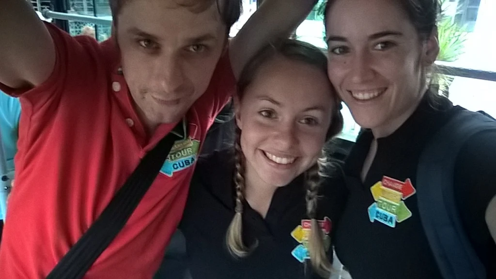
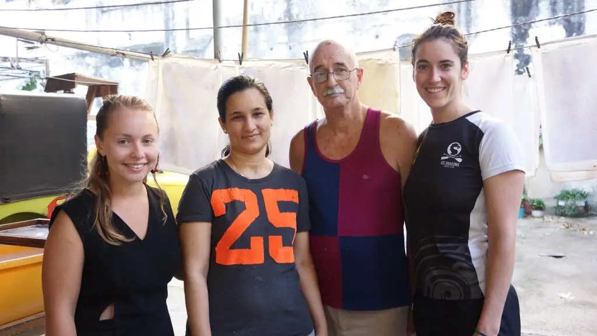
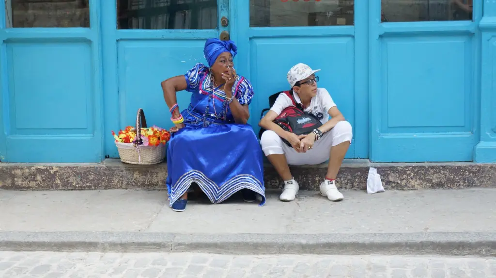
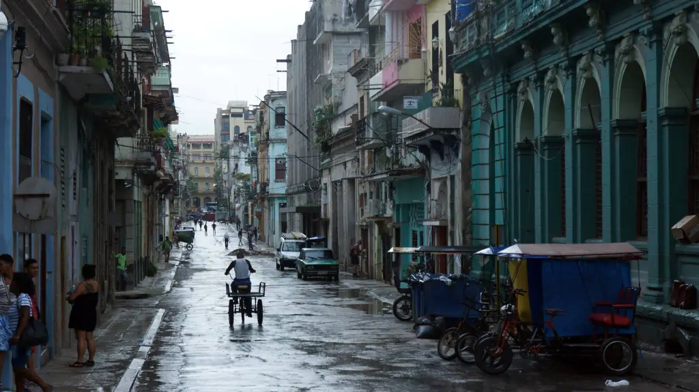
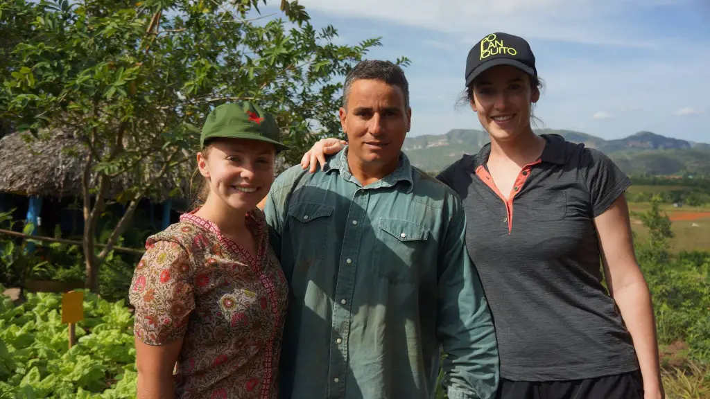

The winds of change had finally made their way to the isolated Atlantic island. In December 2016, just a few days after the death of Fidel Castro, Gabrielle travelled to Cuba as part of a small film crew meeting the Change Makers of Cuba.
We were there to capture and celebrate the agents of change, who grasped their independence and led the social and economic transformation in Cuba.
Privatisation is a key element for communist economies to transition toward the free market. At the end of the ’80s and beginning of the ’90s, former communist countries such as Poland, Hungary, Vietnam and China switched over to the free market and more democratic models of governing. But isolated at the other end of the world was Cuba, which continues to remain one of the very few lasting communist states in present-day world.
Under the guidance of Raul Castro, who acceded to presidency in 2008, his administration aimed to update its socialist economic model by allowing, within defined limits, a significant movement toward the private sector.
In early 2011, some 500,000 employees received “pink slips”, terminating employment in the public sector effective immediately where, until then, almost 90 per cent of Cuba’s workforce had been employed.
The move was designed to spur the private sector in a bid to keep the ailing economy afloat, encouraging Cubans to set up small businesses that were once off limit to a labour force of five million people.
Since then, self-employment has revitalised trade that had been forgotten or undervalued and led to expanding the availability of better quality goods and services. Thus, it was a small transformation.
The island has always had to fend for itself, mostly alone especially after the fall of the Soviet Union. When financial and material aid had stopped, Cuba had to survive and reinvent itself.
After collapse of the European communist bloc in 1992, the Cuban economy was left with no further aid and faced a dramatic economic collapse which led to adopting draconian measures of economy and restriction, in 1992.
At that time, everything was missing: chemical fertilisers, fuel and fresh produce. The individual food ration had dropped 20% in calories and 27% in protein. The average Cuban lost 15 kg and thousands of rural poor fled to cities in the hope of a better future.
It was out of necessity that Cuba decided to turn to the old methods: organic farming, animal traction, natural soil amendment and since transportation was lacking, local horticulture.
We were anxious that with Cuba entering the market economy, it would lose its very essence.
Yet we were delightfully surprised and met inspiring people who innovate, create and undertake otherwise; environmental activists, entrepreneurs and even representatives of the IT world. These local groups of people making the change.
Pictures thanks to Piotr Batory.